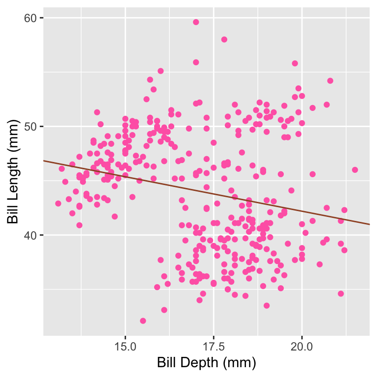
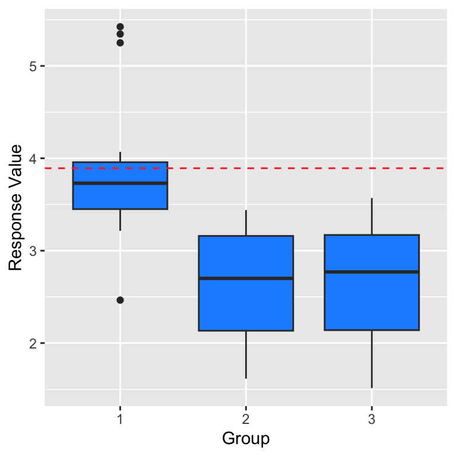
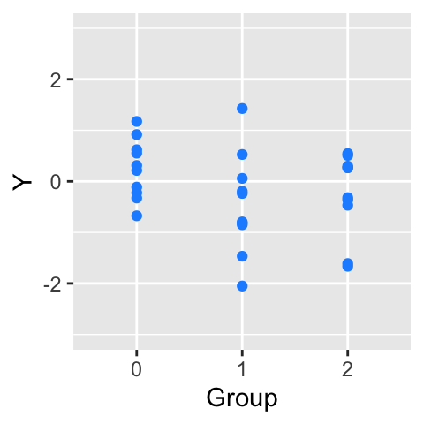
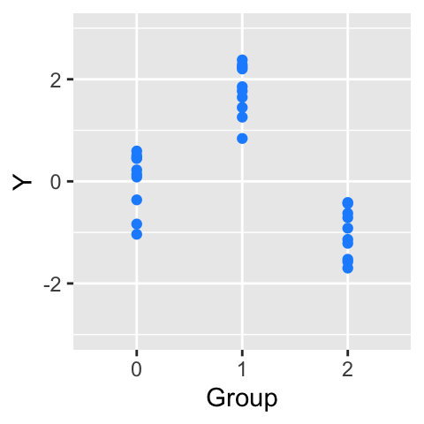
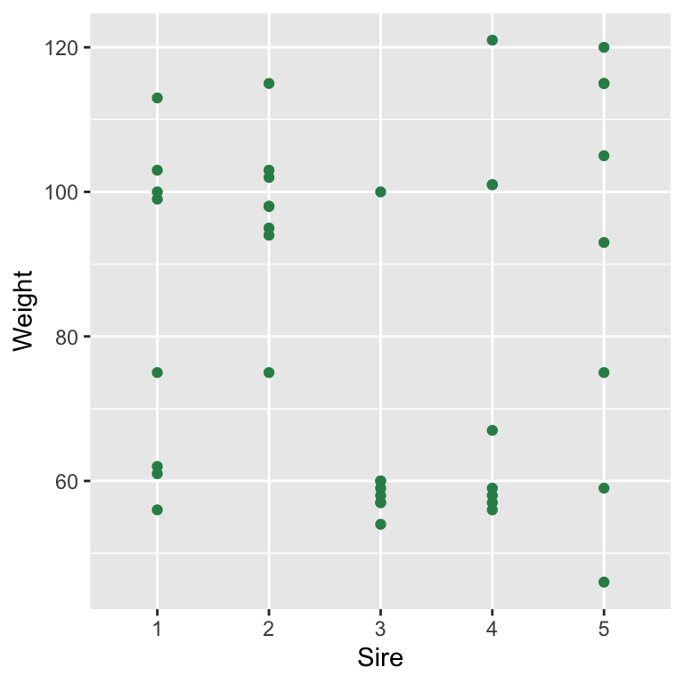
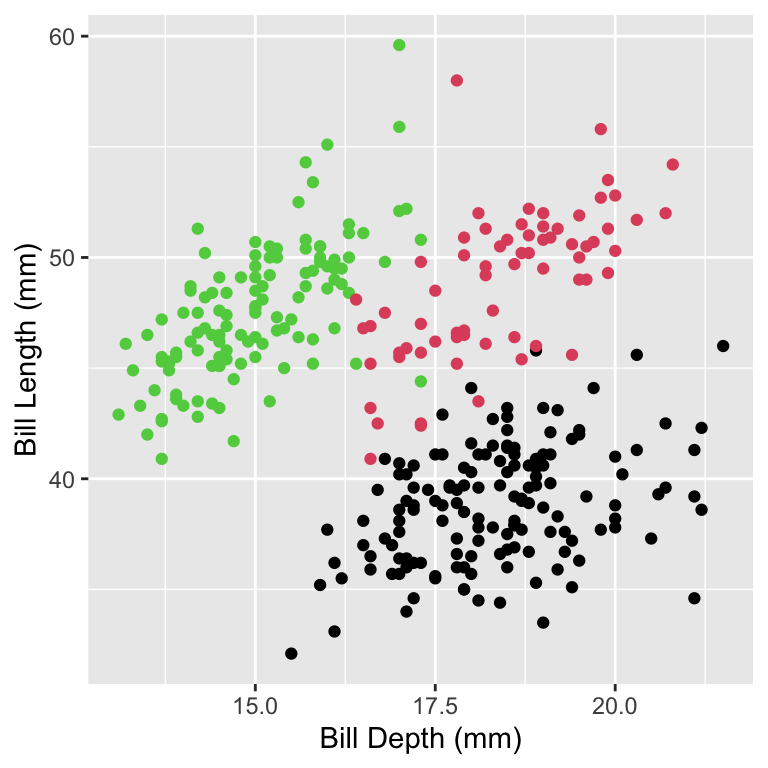
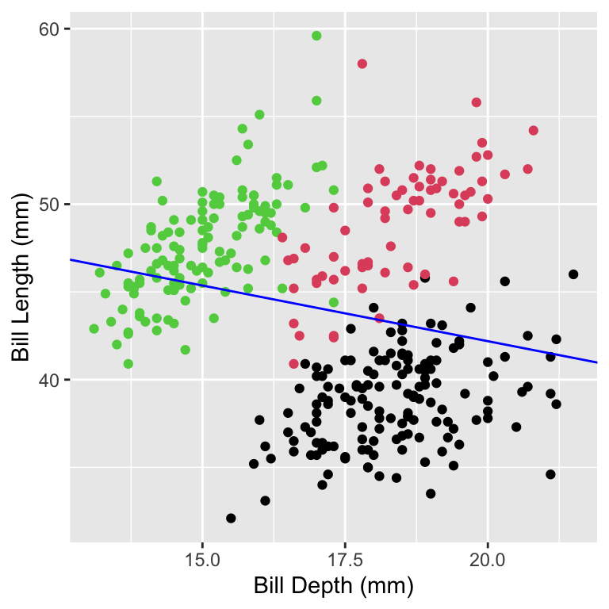
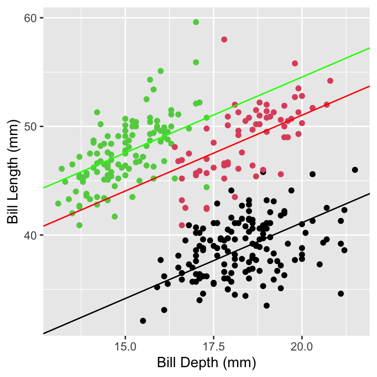
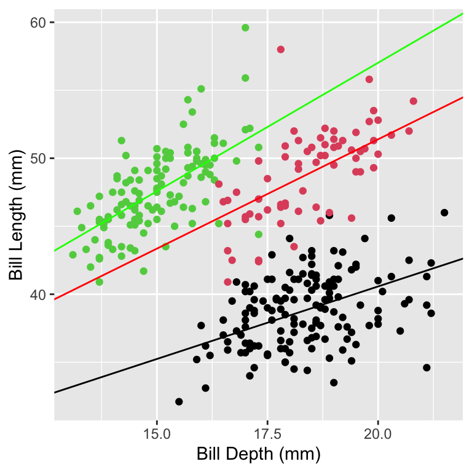

7 Analysis of Variance and Random Effects Modeling
7.1 A Brief Introduction to Experimental Design
While discussing supervised learning thus far, we have focused on trying to uncover the association between a set of predictor variables \(\mathbf{x}\) and a response variable \(Y\), if it exists. However, even if a statistically significant association does exist, association does not imply causation!.
To begin to show how one might be able to infer causation, we will look at three examples provided by Zach Branson of Carnegie Mellon University.
Example 1: Industrial Experiments
Apple wants to test the water durability of their laptops.
- They randomly sample 100 identical laptops for study, and pour water on half of them.
- 20 of 50 “treatment” (water-doused) keyboards continued to work, as opposed to 50 of 50 “control” keyboards.
Can we infer that the water caused the keyboards to break?
- Yes
The laptops were otherwise identical…the only difference was the treatment.
Example 2: Clinical Trials
The Food and Drug Administration wanted to determine whether a new drug alleviated hypertension.
- It randomly picked 100 people with hypertension, and placed 50 people each into the treatment and control groups.
- 30 of 50 treated people had alleviated hypertension, as opposed to 10 of 50 in the control group; a two-sample population proportions test yielded a \(p\)-value of 0.0001.
Did the new drug cause alleviated hypertension?
- We cannot be sure.
Let’s say it turns out that, totally by accident, the 50 people in the treatment group had health insurance, while the 50 people in the control group did not. So perhaps it was the drug, or perhaps the insurance (or perhaps the fact that those without insurance were poorer, or…). Randomization leads to identical treatment and control groups, but only on average…“unlucky” randomization can happen.
Example 3: Epidemiology
We wish to study the effect of smoking on lung health. Ideally, we would run an experiment in which we randomly place people into a smoking treatment group, and into a non-smoking control group. However, it is not ethical to force people to smoke. So instead we randomly select 5000 smokers and 5000 non-smokers to study, and we find that the smokers have worse lung health.
Does smoking cause the observed deterioration of lung function?
- Again, we cannot be sure.
For instance, smokers tend to be older, poorer, and to not have insurance. Can we mitigate this issue? We can if we can identify subsets of treatment and control groups that have similar age, income, education, insurance, etc. If we continue to see similar results, we are in a better position to argue for causality.
Let’s assume that we want to divide \(N\) people into two groups, a treatment group and a control group…(assume \(N\) is an even number). How might we do this? One way is via Bernoulli trials: we assign people to groups effectively via coin flips. An issue with this is that the group sizes can end up being very different. Alternatively, we can utilize complete randomization, in which pick exactly \(N/2\) people at random to be in the treatment group. This resolves the group-size issue observed with Bernoulli trials, but there is still the issue of covariates. For instance, perhaps we want to run a clinical trial that includes both smokers and non-smokers: it could turn out that one group ends up with many more smokers than the other. This “covariate issue” can be dealt with when analyzing the data, but it can also be dealt with at the experimental design stage by using block randomization, in which we identify a potentially problematic covariate, divide people into groups on the basis of that covariate (e.g., smokers vs. non-smokers), and then perform complete randomization within each covariate group. (This scheme can be extended to multiple covariates, e.g., male smokers, female non-smokers, etc.) Common examples of covariates to look out for in designed studies include gender, socioeconomic status, geographic location, medical risk factors, and education, etc.
The effect that covariates can have on analyses is illustrated in the following two plots. In the first one, we show the results of regressing penguin bill length onto bill depth (the distance across a bill near its base), given measurements made of 333 penguins in Antarctica’s Palmer Archipelago. This analysis would lead us to conclude that as bill depth gets larger, bill length gets smaller.
However…the 333 penguins represented three separate species. We thus should identify species as a possible covariate, and redo the analysis, learning three separate regression models, one for each species.
These results make much more sense: the bigger a bill is across, the longer we would expect it to be! What we observe here is a manifestation of what statisticians refer to as Simpson’s paradox.
7.2 Analysis of Variance
Let’s assume that our data consists of a predictor variable with \(k\) categories (or treatment groups) and a continuous response variable. For each group, the response data are sampled according to some underlying population…how can we determine if, e.g., the means of each of the group populations are the same?
- If \(k = 2\) and the response variable is normally distributed within each group, we can do a two-sample \(t\) test.
- If \(k = 2\) and the response variable is not normally distributed, but the distributions are known or can be assumed, we can utilize other hypothesis tests like the population proportions test. This is realm of so-called A/B testing…the test that is used depends on the distribution of the response values for groups A and B.
- If \(k > 2\) and the response variable is normally distributed within each group (with equal variances), we can do one-way analysis of variance (or ANOVA); if there are two categorical predictors, we can do a two-way ANOVA.
- If \(k > 2\) and the response variable is normally distributed within each group (with equal variances), and there is another continuous predictor that can be treated as a covariate (e.g., age), we can do (one-way) analysis of covariance (or ANCOVA).
7.2.1 The One-Way ANOVA Setting
In the simple linear regression setting, our data consists of a continuously valued predictor variable \(\mathbf{x}\) that we attempt to relate to the values of response variable \(\mathbf{Y}\). However, what if instead the values of the predictor variable are discretely valued…and specifically, if they represent groups (or categories)?
If there are \(k > 2\) groups we would utilize one-way analysis of variance (or one-way ANOVA). Here, “one-way” simply indicates that (in our chosen setting) there is only one (categorical) predictor variable.
Why would we not simply use linear regression? Because categories/groups might have no natural numerical order, meaning, for instance, that if we were to learn a linear regression model, then switch the placement of any two of the groups along the \(x\)-axis and relearn the model, the slope would change! (For instance, see the plot below. If we were to swap the positions of groups 1 and 2, the slope would change from being negative to being approximately zero.)
What if we define the predictor variable x as a factor variable instead of as a continuous, numerical variable? This would cause R to change the definition of the linear-regression model, as a factor variable with \(k\) levels is split into \(k-1\) so-called dummy variables, with the other level becoming the so-called reference level. The model thus becomes \[\begin{align*}
Y_i = \beta_0 + \mathcal{I}_{x_i=2} \beta_2 + \mathcal{I}_{x_i=3} \beta_3 + \epsilon_i \,,
\end{align*}\] where \(\mathcal{I}\) is the indicator function, and it takes on value 1 if the condition is true and 0 otherwise.(For instance, \(\mathcal{I}_{x_i=4}\) is 0 if \(x_i = 3\) or \(5\) and 1 if \(x_i = 4\).) We can recast this model into a more intuitive form: \[\begin{align*}
Y_i = \left\{ \begin{array}{ll} \beta_0 & x_i = 1 \\ \beta_0 + \beta_2 & x_i = 2 \\ \beta_0 + \beta_3 & x_i = 3 \end{array} \right.
\end{align*}\] If we change the ordering of the groups, the \(\beta_i\)’s might change, but only because we perhaps define a new reference level. In the plot below, the dashed line is \(\beta_0\) and represents the predicted response for group 1. The negative coefficients for x2 and x3 in the lm() output indicate that the model is predicting that the means in groups 2 and 3 are smaller than the mean in group 1: the mean of group 2 is predicted to be 3.893-1.276 = 2.617, and the mean of group 3 is predicted to be 3.893-1.260 = 2.633.
Estimate Std. Error t value Pr(>|t|)
(Intercept) 3.892600 0.1965203 19.807622 2.133153e-18
x2 -1.275933 0.2947805 -4.328419 1.629668e-04
x3 -1.260000 0.3930406 -3.205775 3.269829e-03
So, to go back to the question “why not use simple linear regression?” It turns out, we do use it…but the model definition changes since x is categorical and not quantitative
So what then is ANOVA? It is simply a mechanism for running a hypothesis test given the linear regression output. For one-way ANOVA, the statistical model is \[\begin{align*} Y_{ij} = \mu + \tau_i + \epsilon_{ij} \,, \end{align*}\] where \(i\) denotes the treatment group (there are \(k\) groups overall), \(j\) denotes an observed datum within group \(i\), \(\mu\) is the overall mean response value,\(\tau_i\) is the deterministic (i.e., not random) effect of treatment in group \(i\), and \(\epsilon_{ij}\) are the error terms, assumed to be independent, normally distributed, and of constant variance \(\sigma^2\)…thus \(Y_{ij} \sim \mathcal{N}(\mu+\tau_i,\sigma^2)\)
In ANOVA, we perform the hypothesis test \[\begin{align*} H_o : \tau_1 = \cdots = \tau_k = 0 ~~~~~ \mbox{vs.} ~~~~~ \text{at least one value differs from zero} \,. \end{align*}\] To reject the null, the value of one or more of the \(\tau_i\)’s has to be large with respect to \(\sigma\).


The left figure represents a situation in which we would fail to reject the null hypothesis, while the right figure represents a situation in which we would reject the null.
Before continuing, we will mathematically define the metrics that we observe in the output of ANOVA analyses. We do this for completeness; the reader can safely skip over this detail.
In an ANOVA model, the the total sum of squared differences (or the TSS) between each datum \(Y_{ij}\) and the overall mean \(\bar{Y}\) is defined as \[ \sum_{i=1}^k \sum_{j=1}^{n_i} (Y_{ij}-\bar{Y})^2 \,. \] We can break this quantity into two pieces \[\begin{align*} TSS &= \sum_{i=1}^k \sum_{j=1}^{n_i} (Y_{ij}-\bar{Y})^2 = \sum_{i=1}^k \sum_{j=1}^{n_i} (Y_{ij}-\bar{Y}_i)^2 + \sum_{i=1}^k n_i(\bar{Y}_{i\bullet}-\bar{Y})^2 \\ &= SSE + SST \,. \end{align*}\] Here, \(\bar{Y}_{i}\) is the sample mean of the data of group \(i\), and \(n_i\) is the sample size in group \(i\). The \(SSE\) reflects the level of data variations within groups, while the \(SST\) gives a sense as to how far each group mean is from the overall mean. The larger the SST value is relative to the SSE value, the more likely that we will reject the null hypothesis.
Under the assumption that \(\tau_1 = \cdots = \tau_k = 0\), we can write that \[ \frac{SSE}{\sigma^2} \sim \chi_{n-k}^2~~~ \mbox{and} ~~~ \frac{SST}{\sigma^2} \sim \chi_{k-1}^2 \,, \] where \(\chi_{\nu}^2\) is a chi-square distribution for \(\nu\) “degrees of freedom.” We can further write that \[ \frac{SST/(k-1)}{SSE/(n-k)} = \frac{MST}{MSE} = F \sim F_{k-1,n-k} \,, \] where \(F\) is a random variable that under the null is sampled according to an F distribution for \(k-1\) numerator, and \(n-k\) denominator, degrees of freedom.
We reject the null hypothesis if the value of \(F\) is sufficiently large relative to its mean value, which is \((n-k)/(n-k-2)\) (or \(\approx 1\) if \(n \gg k\)).
7.2.1.1 Example
anova(lm(Y~x))Analysis of Variance Table
Response: Y
Df Sum Sq Mean Sq F value Pr(>F)
x 2 12.879 6.4395 11.116 0.0002609 ***
Residuals 29 16.800 0.5793
---
Signif. codes: 0 '***' 0.001 '**' 0.01 '*' 0.05 '.' 0.1 ' ' 1In the output,
- the first column shows \(k-1\) and \(n-k\) (so we can see that \(k = 3\) and \(n = 32\));
- the second column shows the SST (top) and SSE (bottom) (see appendix);
- the third columns shows the MST (= SST /( \(k-1\)); top) and MSE (= SSE /( \(n-k\)); bottom);
- the fourth column shows \(F = MST/MSE\); and
- the fifth column shows the \(p\)-value.
We observe that \(p \ll \alpha = 0.05\), so we reject the null hypothesis and conclude that at least one of the means is different from the others.
But…which of the means is different from the others? To try to determine this, we can use a so-called “post-hoc” test such as the Tukey HSD (honest significant difference) test.
TukeyHSD(aov(Y~x)) # one quirk: it won't work with anova() output, just aov() output Tukey multiple comparisons of means
95% family-wise confidence level
Fit: aov(formula = Y ~ x)
$x
diff lwr upr p adj
2-1 -1.27593333 -2.0039372 -0.5479295 0.0004657
3-1 -1.26000000 -2.2306718 -0.2893282 0.0088999
3-2 0.01593333 -0.9846122 1.0164789 0.9991476In the output from TukeyHSD…
- the first column of output shows the groups being compared (2 vs. 1, etc.);
- the second column gives the observed mean difference;
- the third and fourth columns provide confidence intervals on the true mean difference…if the interval does not contain zero, we can conclude the means are different; and
- the last column reinforces the confidence interval by providing a hypothesis test \(p\)-value, where the null is that the true difference is zero.
We note that the Tukey HSD test attempts to correct for multiple comparisons, i.e., for running many separate hypothesis tests. When you run many tests, then you are more likely, by chance, to see \(p\)-values that are less than \(\alpha\) even if the null is always true. The Tukey HSD test attempts to control the “family-wise error rate” such that if all the nulls are correct, the probability of seeing one value \(p < \alpha\) is \(\alpha\). Note, however, that the algorithm for controlling the rate of false positives is known to be overly conservative.
Given the output above, we conclude that Group 1 has a different mean from Group 2, and also from Group 3, while the means in groups 2 and 3 are not significantly different.
7.3 Random Effects Modeling
In a one-way analysis of variance (ANOVA) model, there is an implicit assumption that every possible group has been identified and is represented in the dataset. For example, in a particular study, we might have vaccine-taking, placebo-taking, and no-treatment groups, and these would be the only three possible groups. What if, alternatively, we only have data gathered from a subset of all possible groups? As an example, we might examine data for all the players on \(m\) teams in a league, where the overall number of teams is \(n > m\). The short answer is that we would move from the setting of (one-way) ANOVA to the setting of random effects modeling.
If we are analyzing groups of data (without regard to any other possible predictor variables), the random effects model will be \[\begin{eqnarray*} Y_{ij} = \mu + \tau_i + \epsilon_{ij} \,, \end{eqnarray*}\] which certainly appears to be the same as the one-way ANOVA model, but here the \(\tau_i\)’s are not constants, but random variables: \[ \tau_i \sim \mathcal{N}(0,\sigma_\tau^2) \,. \]
What actually changes, then, if we adopt this model? In one-way ANOVA, the goal is to perform the hypothesis test \(\tau_1 = \cdots = \tau_k\) versus “at least one of the \(\tau\)’s differs from the others.” With a random effects model, the goal is to assess how large \(\sigma_\tau^2\) (variance of the means across groups) is compared to \(\sigma^2\) (variance of the data within each group).
7.3.1 Example
The data plotted below come from this book. They show the birth weight of calves born to five different fathers (“sires”). Since the number of possible sires is \(\gg 5\), a random-effects model is the appropriate one to learn here.

Below, we regress weight upon sire, with the model formula indicating that there should be a random intercept term for each sire. (We will return to discuss how to write model formulae below.)
suppressMessages(library(lme4))
re.out <- lmer(weight ~ 1|sire,data=animals)
summary(re.out)Linear mixed model fit by REML ['lmerMod']
Formula: weight ~ 1 | sire
Data: animals
REML criterion at convergence: 358.2
Scaled residuals:
Min 1Q Median 3Q Max
-1.9593 -0.7459 -0.1581 0.8143 1.9421
Random effects:
Groups Name Variance Std.Dev.
sire (Intercept) 116.7 10.81
Residual 463.8 21.54
Number of obs: 40, groups: sire, 5
Fixed effects:
Estimate Std. Error t value
(Intercept) 82.550 5.911 13.96Here, REML is “restricted maximum likelihood,” a maximum likelihood estimator that acts to counteract biases in the estimation of variances. The fixed effect is the mean birth weight, which is 82.55. As for the random effects, the sire-to-sire variance in birth weight is estimated to be \(\sigma_\tau^2 = 116.7\) (so that the standard error is \(\sqrt{116.7} = 10.81\)), whereas the within-sire variance in birth weight is \(\sigma^2 = 463.8\) (standard error \(\sqrt{463.8} = 21.54\)). The overall variance in birth weights is thus \(\sigma^2 + \sigma_\tau^2 = 580.5\).
With these results, we can infer that the correlation (magnitude of linear dependence) between the birth weights of two calves with the same sire will be \(\sigma_\tau^2/(\sigma_\tau^2+\sigma^2) = 0.20\) (this is a “weak” correlation). (The correlation between the weights of calves with different sires is assumed to be zero.)
7.3.2 Example

First, we will learn a linear regression model without regard to the fact that the species is a covariate.
# regress bill length upon bill depth
lm.out <- lm(bill_length_mm ~ bill_depth_mm,data=df)
AIC(lm.out)[1] 2063.692The AIC, or Akaike Information Criterion, is a metric of fit quality that penalizes model complexity and that we can use to determine which in a suite of nested models is the best representation of the data-generating process. We have seen AIC before, in the context of variable selection methods applied to linear models.

Now we implement a random-intercept model (as indicated by the “(1|species)”).
# regress bill length upon bill depth
# make species a random effect (random intercept)
lm.out <- lmer(bill_length_mm ~ bill_depth_mm +
(1|species),data=df)
coef(lm.out)$species (Intercept) bill_depth_mm
Adelie 13.22455 1.395653
Chinstrap 23.12096 1.395653
Gentoo 26.63174 1.395653AIC(lm.out) # much lower - better model[1] 1585.28The AIC value is much lower: this model is a much better representation of the data-generating process.

Now we learn a random-effects model where the intercepts are the same for each species, but the slopes differ.
# regress bill length upon bill depth
# make species a random effect (random slopes)
lm.out <- lmer(bill_length_mm ~ bill_depth_mm +
(0 + bill_depth_mm|species),data=df)
coef(lm.out)$species (Intercept) bill_depth_mm
Adelie 19.24352 1.066549
Chinstrap 19.24352 1.607421
Gentoo 19.24352 1.888989AIC(lm.out) # sufficiently lower-better model still[1] 1566.371
The AIC value is even lower! But we should probably just go ahead and learn the random-effects model with random slopes and intercepts, before saying more about which of the models is the best.
# regress bill length upon bill depth
# make species a random effect
# (random intercepts and slopes)
lm.out <- lmer(bill_length_mm ~ bill_depth_mm +
(bill_depth_mm|species),data=df)boundary (singular) fit: see help('isSingular')coef(lm.out)$species (Intercept) bill_depth_mm
Adelie 22.72927 0.8773012
Chinstrap 18.23566 1.6623990
Gentoo 15.52816 2.1354384AIC(lm.out) # higher than before - not best model[1] 1567.762The AIC value here is slightly higher than that observed for the random-slope model. Hence we can now declare the random-slope model to be the “winner.” (This model does make intuitive sense: if a penguin has a bill with near-zero depth, we’d expect it to have near-zero length as well.)